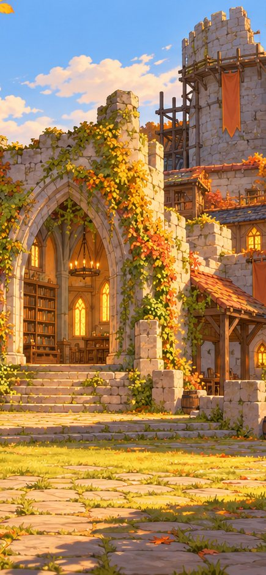
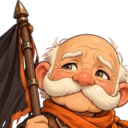

Lager und Burg: wie man die Räume erreicht
Die Heimat ist ein 3D-Diorama (hier die Orte-Moodboards als Platzhalter). Jeder Raum öffnet ein Panel über der Ansicht, jede Handlung braucht höchstens zwei Taps. Unten die gewählte Leiste aus Schritt 3, mit „Weltkarte“ an der Stelle der Heimat. Zuerst zwei Varianten für die Übersicht, dann Lager in Akt 1, ein Raum-Panel (Schmied) und die Gedächtnishalle.

Räume sitzen als Steine direkt auf ihrem Gebäude; man wischt durch die Burg. Am stimmungsvollsten, aber 11 Räume passen nie auf einen Bildschirm.
Oben die lebende Burg (Gefährten, Ausbauteile, Gedenkstein), unten alle 11 Räume auf einen Blick mit Stufe (Punkte), grünem Pfeil für „ausbaubar“ und Zahl für Neues. Tap auf das Gebäude oben geht auch.

Gleicher Aufbau, nur sechs Stationen ohne Stufen. Abends warm, wie die Narrative für Ruheszenen verlangt.
Schmied


Mt 12 · Tr 78


Panel über der weichgezeichneten Burg. Item antippen (1), „Aufwerten“ (2). Der Ausbau steht oben im Panel, sobald Gefährte und Gold reichen.

Fahnenträger

Späher · St. 7
fiel in Heimsuchung
„Wer zuletzt geht, macht das Feuer aus.“ – Fenn
→
Fenns „Leichter Schritt“ an Tobin · 1× in Akt 2
Alles entsättigt bis auf Glutorange (Art Direction). Gedenksteine mit Ort und Rolle, auch Söldner. Einmal pro Akt die Lektion eines Gefallenen weitergeben.